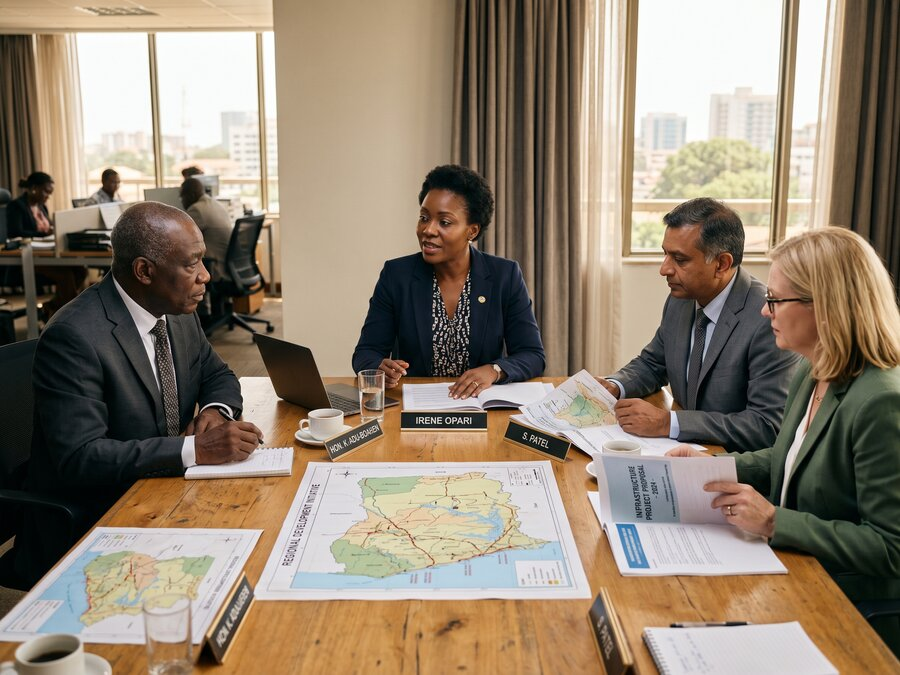
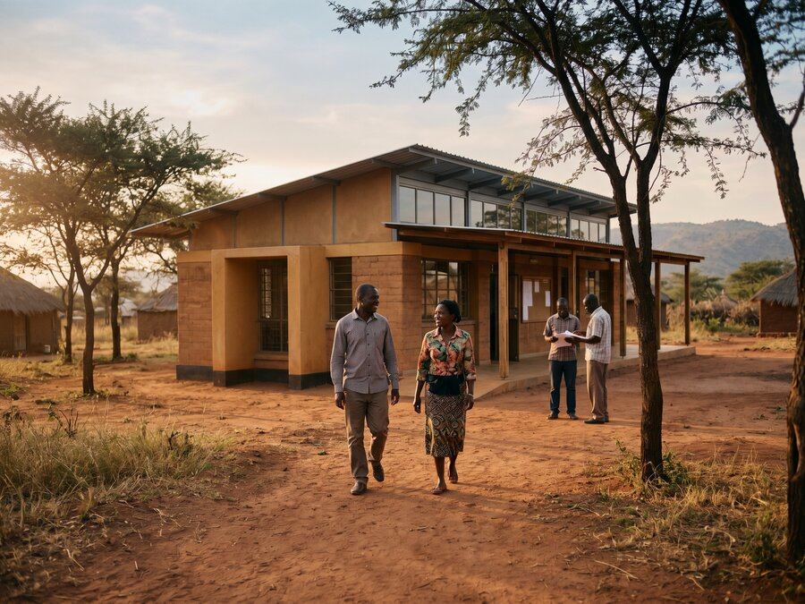

About Us
Our Story
The Beginning
A Childhood Shaped by the World
From early childhood, Sahara Sunday Spain was exposed to parts of the world where development is not a concept, but a daily negotiation. At the age of three, she spent six months in Calcutta, India, alongside her mother, living in close proximity to humanitarian work and extreme poverty.
That experience was followed by a childhood spent moving between countries and cultures, shaped by her mother's work documenting indigenous communities with limited Western contact. These were not short visits. They were lived experiences that offered an early understanding that outside intervention, even when driven by care, is rarely straightforward.
At nine years old, Sahara encountered children her own age in a Dogon village in Mali who were unable to attend school. Rather than a symbolic gesture, she made a long-term commitment. A school for girls was built and financed, and it operated for over thirteen years.
The experience was formative not only because of its success, but because of its limits. When civil unrest made continuation impossible, the school closed. The lesson was clear and lasting: impact that depends on fragile structures or isolated efforts is vulnerable, no matter how well-intentioned.

The Pattern
The Problem Isn't a Lack of Compassion
Over time, a pattern emerged. Across developing regions, projects often arrive with urgency and optimism, but are designed around short funding cycles, narrow objectives, or external timelines. When attention shifts, financing changes, or leadership moves on, the work dissolves.
Communities are left navigating the consequences of incomplete systems, broken promises, or dependencies that were never meant to be permanent.
The problem is rarely a lack of compassion. It is a lack of follow-through.
These experiences shaped a deep scepticism toward development models that prioritise speed, visibility, or simplicity over durability. Education cannot succeed in isolation from economic stability. Environmental restoration cannot endure without local ownership and long-term economic relevance. Health, land, livelihoods, and ecosystems are interconnected — whether projects are designed that way or not.
"Too many projects fail not from lack of care, but from lack of continuity. Gentle Earth Project was built to stay."

Building GEP
Structure as a Form of Responsibility
As Sahara's professional background expanded into law, business, and complex project structuring, it became increasingly clear that longevity requires structure. Philanthropy has a vital role, particularly in moments of crisis, but it often lacks the mechanisms needed to enforce accountability over decades.
Without financial continuity, governance, and incentives aligned with long-term outcomes, even the most thoughtful initiatives struggle to survive.
Gentle Earth Project was therefore built as a for-profit, impact-driven platform — not to extract value, but to ensure responsibility. Capital, when structured carefully, creates obligation. It demands planning, discipline, and continuity. It allows projects to be designed around ecological timescales rather than funding windows.
From the beginning, the work has focused on systems, not standalone interventions. Landscapes are approached as living environments with social, ecological, and economic dimensions that must be developed together. Circular economic models are not an add-on, but a necessity. Without viable local economies tied to the health of the land, restoration does not last.
The Team
Defined by a Willingness to Stay
Equally central to the story is the team behind the work. Gentle Earth Project is built by experts across environmental science, forestry, agronomy, engineering, law, economics, anthropology, education, healthcare, and community engagement. Each brings depth in their field.
What unites them is not résumé or ideology, but a shared refusal to engage in work that looks successful on paper but fails in practice.
The team is defined by a willingness to stay involved, to monitor outcomes, and to adapt when systems change. Ecosystems evolve. Communities change. Responsible development requires attention over time, not a handover and an exit.
Today, Gentle Earth Project operates as a platform capable of designing and implementing large-scale ecosystem restoration and circular development initiatives in partnership with governments and local stakeholders. The scale has grown, but the principles have not changed.
At its core, Gentle Earth Project is built on the belief that societal development does not have to degrade the environment. With scientific rigour, thoughtful use of technology, and long-term custodianship, human activity can actively strengthen the ecosystems it depends on.